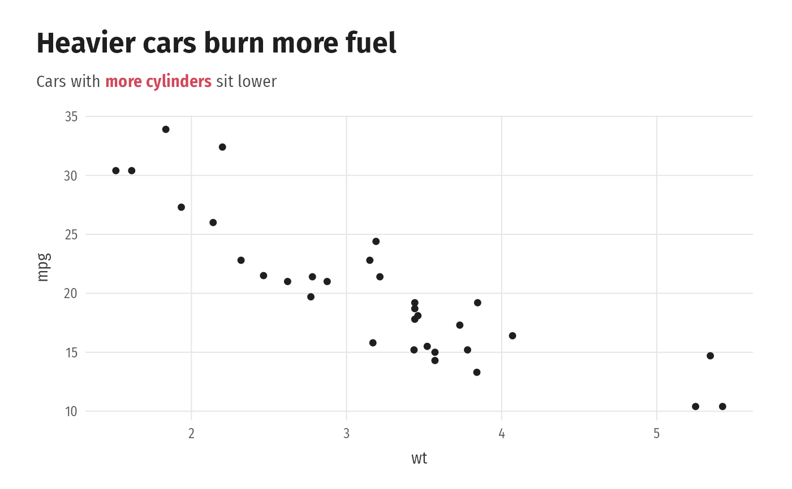

theme_ggbasket() is an editorial theme in the style of Cedric Scherer's
graphics: white background, bold left-aligned title, a subtitle that
wraps by itself and renders markdown (so words can be coloured to replace
a legend, see colour_text()), a monospaced caption, and
generous margins. Titles and subtitles wrap to the plot width by themselves. theme_court() is the same look without axes, for shot
charts.
Usage
theme_ggbasket(base_size = 11.5, base_family = NULL, grid = "xy")
theme_court(base_size = 11.5, base_family = NULL)Arguments
- base_size
Base font size.
- base_family
Body font family. Default: picked by
ggbasket_fonts().- grid
Which major grid lines to keep:
"xy","x","y"or"none".
Details
Fonts: Fira Sans (titles), Fira Sans Condensed (text) and Roboto Mono
(numbers), all free on Google Fonts. Missing fonts fall back to Roboto,
Helvetica or the system sans. On the base pdf() / postscript() devices,
which cannot use system fonts, the theme falls back to "sans"; use
ggsave(device = cairo_pdf) or a PNG for the full look. Set
options(ggbasket.family = "sans") to switch the custom fonts off.
Examples
library(ggplot2)
ggplot(mtcars, aes(wt, mpg)) + geom_point() +
labs(title = "Heavier cars burn more fuel",
subtitle = paste("Cars with", colour_text("more cylinders", "#D1495B"), "sit lower")) +
theme_ggbasket()
